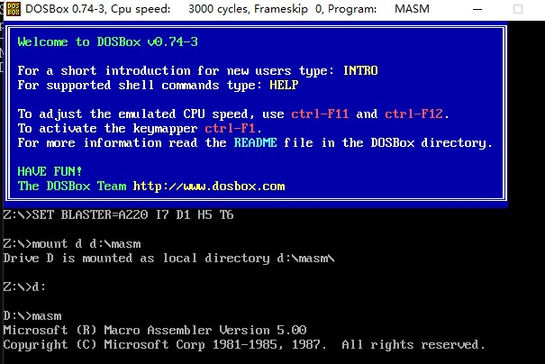
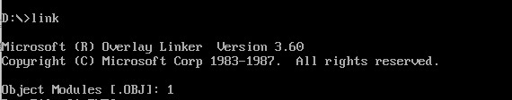

从0开始的汇编语言（四）
前言
从0开始的汇编语言系列，选用的参考书籍是清华大学出版社，王爽老师的《汇编语言第四版》。该系列属于博主的笔记系列，文中会采用一些书中的例子，图片以及思考题供读者阅读，如需详细学习汇编语言可以购入一本，谢谢。
学习之前我们做如下约定（随着学习深入还会出现新的约定）：
- 十六进制数均以H结尾
- 使用8086CPU作为案例
话不多说我们马上开始。
一个源程序的诞生
oh！这是什么意思？一个源程序的诞生！没错，学到这里我们终于开始写我们的第一个完整的汇编语言程序了，用编译和连接程序将它们变成.exe文件。但在这之前我们还是先看看一个程序怎么诞生的吧。
第一步，程序员打开了文本编辑器（Edit，记事本等）写下了一行一行汇编指令。这一步生成了一个储存源程序的文本文件。
第二步，使用汇编语言编译程序对源程序文件中的源程序进行编译，产生目标文件；再用连接程序对目标文件进行连接，这样就生成了可以在操作系统中直接运行的可执行文件。
Tips：可执行文件包括两部分：
- 程序（从源程序的汇编指令翻译过来的机器码）与数据（源程序定义的数据）
- 相关描述信息（比如，程序有多大，要占用多少内存空间等）
这一步生成了一个可以在操作系统中直接运行的可执行文件。
第三步，执行可执行文件中的程序，操作系统依照可执行文件中的描述信息，将可执行文件中的机器码和数据加载入内存，并进行相关的初始化（比如设置CS:IP指向第一条要执行的指令），由CPU执行程序。
源程序什么样子嘞？
恭喜恭喜，是个男孩。 我们来看下面这段源程序，认识一下它。
1 | assume cs:codesg |
在汇编语言源程序中，包含两种指令，一种是汇编指令，一种是伪指令。汇编指令是有对应机器码的指令，可以被编译为机器指令，最终由CPU所执行。而伪指令没有对应的机器码，不会被CPU执行，那谁来执行呢？伪指令是由编译器来执行的，根据伪指令进行相关的编译工作。
伪指令
在程序中一共出现了三种伪指令:
1.XXX segment ······· XXX ends
segment和ends是一对成对使用的伪指令，其作用是定义一个段，这两个指令是必不可少的，XXX代表段名。例如程序中codesg segment代表段codesg由此开始，codesg ends代表段codesg到此结束。一个汇编程序会有多个段用于存放指令，数据，或者被当做栈使用一个有意义的汇编程序至少有一个段，用来存放代码
2.end
注意啦！这里说的可不是上面所提到的ends，这是完全不同的！end代表了一个汇编程序的结束，编译器在编译一个汇编程序时遇到了end就会停止编译，所以在编写结束时，一定要记得写end。
3.assume
assume v. 假设。这条指令假设某一段寄存器和程序中的某一个用segment ······· ends定义的段相关联。通过assume说明这种关联，也就是assume将有特殊用途的段和相关的段寄存器关联起来了。比如在程序中我们定义了一个叫做codesg的段，这个段用来存放代码的，也就是一个代码段。那CPU中和代码有关的寄存器就是段寄存器CS，所以用assume将codesg和CS联系起来了。
源程序中的“程序”
我们编程的最终目的是为了让计算机完成一定的任务。源程序中的伪指令由编译器来处理，这并不能实现我们编程的最终目的。我们所说的程序实际上是源程序中由计算机执行处理的指令或者数据。程序最开始以汇编指令的形式存在源程序中，经过编译、连接后变为机器码，存储在可执行文件中。
标号
汇编程序中，除了汇编指令和伪指令外，还有一些标号，比如“codesg”。一个标号指代一个地址。比如codesg在segment前面作为一个段的名称，这个段的名称最终将被编译、连接程序处理为一个段的段地址。
程序返回
了解了一个汇编程序由什么组成后我们可以照着案例写出一个新的汇编程序，计算2的3次幂：
1 | assume cs:abc |
看起来很完美，和案例一样完美？这些汇编指令现在已经存在源程序中了，经过编译、连接后变为机器码，存储在可执行文件中，但它要怎么才可以运行起来呢？
下面我们在DOS的基础上，简单的讨论一下这个问题。一个程序我们叫它P2在可执行文件中，则必须有一个正在运行的程序P1,将P2从可执行文件中载入内存后，将CPU的控制权交给P2，P2才可以开始运行，P1这时停止运行。等P2运行结束后，再把CPU控制权交还给P1，之后P1才会继续进行。感觉起来就像是我们写一个C++或者JAVA程序时要有一个main函数，程序由此开始，将CPU的控制权交给所调用的函数，等函数执行完在把CPU控制权交还给main函数。
现在我们知道了一个程序结束后，应该将CPU控制权交还给使它运行的程序，这个过程就叫做程序返回。但话又说回来，程序返回到底是怎么样返回的呢？我们要做什么呢？
我们回头看案例的汇编程序其中有这样两行代码：
1 | mov ax,4c00H |
这两条指令就实现了程序返回。我们暂时不深究这两行代码的具体意义，只要知道这两行代码可以完成程序返回即可。
所以，我们写的程序还是有一点点的瑕疵，我们重新修改。
1 | assume cs:abc |
这样我们就得到了一个真的很完美的汇编程序。
实现一个汇编程序！！
现在我们要动手写一个汇编程序啦！！！
编辑源程序
1.这里我们使用DOSBOX下edit
2.在edit界面下编写如下程序
1 | assume cs:codesg |
3.保存这个汇编程序，点击File-Save，修改文件名称（File Name）为1.ASM 点击OK
保存好的汇编程序在MASM文件夹下，忘记MASM的小伙伴可以回到从0开始的汇编语言（一）搭建汇编语言环境部分复习一下。
编译
现在我们有了源文件程序，我们要开始对它进行编译得到包含机器代码的目标文件。在编译一个源程序之前我们要先找到一个相应的编译器，恰好我们在搭建汇编语言环境时下载的命令文件中就有微软的MASM5.0汇编编译器。所以我们可以直接开始对源文件程序编译啦，以1.ASM为例。
1.打开DOSBOX输入MASM

2.输入保存的源程序文件1.ASM
这里有几点要说明，首先，如果我们需要编译的文件扩展名不是ASM，比如是p1.txt那我们就要输入p1.txt全名称才可以。其次，Source filename输入的文件如果和MASM.exe在一个文件夹(MASM文件夹)下那么就可以省略路径，否则需要指定文件的路径。比如我们所需要编译的文件是在c:\windows\desktop下的p1.txt文件，那么我们就要输入c:\windows\desktop\p1.txt。最后Source filename后有[.ASM]这个代表默认的文件扩展名是ASM，如果你确实要编译一个ASM文件且文件位置与MASM.exe在一个文件夹下，那么只需要输入ASM文件名称即可。
在输入完1后会出现Object filename这个就是我们编译要得到的目标文件[1.OBJ]提示我们默认生成的目标文件名为1.OBJ如无更改可以enter跳过。之后出现的Source listing和Cross-reference生成的都是中间文件我们可以选择enter跳过，让编译器忽略生成。
连接
现在我们有了目标文件1.obj，我们接下来对它进行连接，得到可执行文件。当然啦，我们也需要一个连接器，恰好我们有微软的Overlay Linker3.60连接器。事不宜迟，开始连接！
1.打开DOSBOX输入link，这里的注意事项和编译时的一样要注意路径和文件扩展名的问题。

2.同样我们跳过剩下三个选项，这三个选项分别是生成的exe文件名称及位置，映像文件（.map），库文件(.lib)当然了，你也可以在第二个选项也就是生成exe文件那个选项中，输入你想要的路径及文件名，这样就可以在你想的位置生成执行文件啦。
这里出现了 no stack segment （没有栈段）我们先忽略这个错误。
这样我们就得到了可执行文件1.exe只是你不能运行它，大人时代变了。
简化的方式编译与连接
如果你已经默认忽略中间文件生成了那你可以这样做：
编译时输入MASM 文件名（考虑路径，文件扩展名问题）；（注意结尾这个分号要加上要不然还是会询问中间文件是否生成）。
连接时输入link 文件名（考虑路径，文件扩展名问题）；（注意结尾这个分号要加上要不然还是会询问中间文件是否生成）。
运行程序
呼！终于到这个时候啦，是不是还有点点紧张？安啦，安啦。打开DOSBOX输入1或者1.exe。
哎？！等会这是怎么回事，怎么没有反应！！什么都没有！！别急，别急。咱们也没写可以输出的指令，当然看不出来结果啦，我们以后会写其他可以看出结果的程序的，敬请期待。
谁将程序装载到内存里并运行它呢？
我们之前在程序返回部分讲到过，一个汇编程序运行需要另一个程序将该程序装载到内存之中并将CPU的控制权给该程序才可以，但我们刚才运行时候没用开另一个程序呀，那到底是谁把程序装载到内存中并且运行了呢？故事还要从操作系统的shell（外壳）讲起。
操作系统是一个由多功能模块组成的庞大的、复杂的软件系统。任何通用的操作系统都需要提供一个shell（外壳）的程序，供用户使用其操作计算机系统。听起来很玄妙，但其实我们常用的CMD，PowerShell就是Windows系统提供给我们的shell，而DOS也不例外，它为用户提供了一个叫做command.com的命令解释器，也就是DOS的Shell。DOS启动后，先进行一些重要的初始化工作，然后运行command.com，执行其他相关任务后，屏幕上显示当前盘符和路径组成的提示符。也就是我们打卡DOSBOX后的画面。这个时候command.com就已经在运行了。然后我们要运行我们的可执行文件1.exe，command就根据我们的文件名找到文件，将文件中的程序载入内存，修改CS:IP指向程序入口，此后command暂停工作，待CPU处理完1.exe，控制权交还给command。
所以真相只有一个，那就是command这个shell将程序装载到内存中并修改CS:IP指向程序入口。
程序执行过程中的跟踪
虽然我们没有办法看到程序输出在界面上，这是因为我们没有写一些输出指令。但我们写了mov指令呀，我们不能通过debug -r的方式去观察ax，bx的数值变化嘛，可以只不过我们用到的命令是debug 1.exe(可执行文件名)，这样debug就将1.exe载入了内存之中并修改了CS:IP。OH！对啦，如果你使用程序跟踪的方式运行一个程序，那就是debug程序将程序装载到内存中啦！
程序去哪？
现在我们知道了程序被command加载到了内存之中，可问题是程序到底加载到哪里了呢？我要从哪里才可以看到程序呢？谈到这个我们先看看一个程序如何被加载到内存中：
由图可知，程序加载后，ds中存放着程序所在内存区的段地址，这个内存区的偏移地址为0，这程序所在的内存区地址为ds：0，这个内存区前256个字节存放的是PSP,DOS用来和程序进行通信。从256字节往后的空间存放的就是程序。
所以从ds中可以得到PSP的段地址SA，PSP的偏移地址为0，则物理地址为SA×16+0
又因为PSP占256（100H）字节，所以程序的物理地址是：
SA×16+0+256=SA×16+16×16+0=(SA+16)×16+0
也就是段地址是SA+16，偏移地址是0。程序运行起来就会根据这两个地址分别设置寄存器CS与寄存器IP，从而进入程序。
了解完这些你就可以用debug来追踪你的程序啦但记住执行int 21H指令时要使用p指令。
 wechat
wechat alipay
alipay